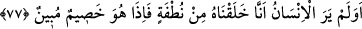

özellikle de Allah uğrunda olduğu zaman ona hafif gelir. Nitekim et-Te’vîlâtü’n-
Necmiyye’de böyle geçmektedir.
Büyüklerden birisi der ki: “Belâ ve musibetin Allah’tan olduğunu bilmen belânın
elemini hafifletir.”
Cânandan gelen her şey benim için safâ olur
Burhânü’l-Kur’ân’da
der
ki:
“__WORD__
kavli
ile
“
(Onların sözleri seni üzmesin. Çünkü bütün izzet (ve
üstünlük) Allah’ındır.)” (Yûnus, 10/65) kavli, “__WORD__de vakf konusunda birbirine
benzer. Çünkü buradaki vakf vakf-ı lâzımdır. “__WORD__” her ikisinde de hikâye etmek (onların
söylediklerini aktarmak) için fetha değil, başlangıç sebebiyle kesre yapılmıştır. Her iki
âyette de onların hikâye edilen sözleri hazfedilmiştir. Bu iki yerde vasl câiz değildir.
Çünkü Hz. Peygamber (s.a.) böyle bir hitapla muhâtab olmaktan münezzehtir.”
Bahru’l-ulûm’da der ki: “Şüphesiz biz, onların gizlemekte olduklarını da, açığa
vurduklarını da biliyoruz.” kavli başlangıç cümlesi olarak nehyin sebebini
bildirmektedir. Aynı şekilde ta’lîl lâmının hazfi düşünülerek “__WORD__” diye hemzeyi fetha ile
okumak câizdir. Rasûlullah (s.a.)’in “
” şeklindeki telbiyesi de buna
göredir.[178] Bu hemzeyi Ebû Hanîfe kesre ile “__WORD__” diye, İmam Şâfiî ise fetha ile “__WORD__”
diye okumuştur. Her iki okuyuş da sebep bildirmek içindir.”
el-Kevâşî’de der ki: “Bazıları iki âyette hemzeyi fetha olarak “__WORD__” diye okursa namazı
bâtıl olur ve kâfir olur diye iddiâ etmiştir. Halbuki böyle değildir. Çünkü fetha ile
okuyan bunu illet/sebep bildirmek için okumuş olabilir. O zaman mânâsı kesre ile
okumak gibidir. Ya da “__WORD__den bedel olarak fetha ile okuyabilir. Bu küfür de değildir.
Çünkü “Andolsun (bilfarz) Allah’a ortak koşarsan, amelin mutlaka boşa gider.”
(ez-Zümer 39/65) âyetinde olduğu gibi Hz. Peygamber (s.a.)’e hitap edilip de
başkasının murad edilmiş olması da mümkündür. Bilakis bir kimse, Allah Teâlâ’nın
onların gizlediklerini ve açığa vurduklarını bilmesine Hz. Peygamber (s.a.)’in
üzüldüğüne inanırsa kâfir olur.” Kevâşî’nin sözü özet olarak böyledir.
77. İnsan görmez mi ki, biz onu meniden yarattık. Bir de bakıyorsun ki, apaçık
düşman kesilmiş.
“İnsan görmez mi ki, biz onu meniden yarattık.” Bu söz kafir ve müşriklerin
kendilerinde en açık delili ve en âdil şâhidi gördükten sonra yeniden diriltilmeyi inkar
etmelerinin bâtıl olduğunu beyan etmek için sevk edilmiş yeni bir sözdür. Nitekim
bundan önce geçen âyetler de ellerinde bulunan nimetlerde tevhidi ve müslüman olmayı